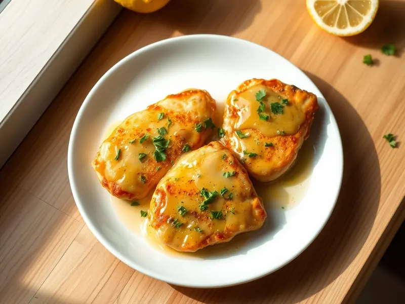

Фото: Иллюстрация ИИ, Cloudflare Workers AI
Куриная пикката в лимонном соусе
Тонкие куриные эскалопы в муке под сливочно-лимонным соусом по-итальянски
25 мин3 порц.439 ккал на порциюБ 49 · Ж 22 · У 10Итальянская кухня
Открыть в приложении: порции, таймеры, список покупок
Продукты на 3 порц.
- Куриное филе600 г
- Мука пшеничная1,5 ст. л.
- Сливочное масло40 г
- Оливковое масло1 ст. л.
- Лимон1 шт
- Бульонный кубик1 шт
- Вода150 мл
- Петрушка0,3 пучка
- Соль0,5 ч. л.
- Перец чёрный молотый2 щеп.
Как готовить
- Разрежьте филе вдоль на тонкие пласты и отбейте до 0,5-0,7 см. Посолите, поперчите и обваляйте в муке, стряхнув лишнее. Растворите кубик в горячей воде. Это 7 минут.
- Разогрейте оливковое масло с половиной сливочного на среднем огне. Обжарьте эскалопы по 3 минуты с каждой стороны до золотистой корочки. Переложите на тёплую тарелку.
- Влейте в сковороду бульон и сок лимона, соскребите лопаткой поджаристые кусочки со дна. Кипятите 3-4 минуты, пока соус не уварится наполовину.
- Снимите с огня, вмешайте оставшееся сливочное масло кусочками - соус станет гладким и чуть густым.
- Верните эскалопы в соус на 1 минуту, посыпьте рубленой петрушкой и подавайте.
Совет. Масло вмешивайте уже не на огне, иначе соус расслоится. В классике добавляют 1 ложку каперсов - если есть, положите их вместе с бульоном.